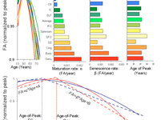

Enhancing Neuro Imaging Genetics Through Meta Analysis
Alternated brain connectivity has been implicated in the development and clinical burden of schizophrenia. We tested if differences in the trajectories of white matter tract development influenced the patient-control differences observed in FA and if in turn, those tracts show exacerbated decline with aging. (Read more; run the program; download source code on the NITRC website)

Heterochronicity of White Matter Development and Aging and Vulnerability to Schizophrenia
Kochunov Peter, Ganjgahi Halib, Winkler Anderson, Kelly Sinead, Shukla Dinesh, Xiaoming Du, Jahanshad Neda, Rowland Laura, Sampath Hemalatha, Patel Binish, O’Donnell Patricio, Xie Zhiyong, Paciga Sara A, Schubert Christian, Chen Jian, Zhang Guohao, Thompson Paul M., Nichols Thomas E., Hong Elliot L.
We harmonized the processing of diffusion tensor imaging (DTI) data of 2391 healthy controls and 1,984 schizophrenia patients from 30 studies worldwide and meta-analyzed regional effects. We have observed significantly higher mean and radial diffusivity measures for schizophrenia patients while axial diffusivity showed no differences. Longer duration of illness was significantly correlated with lower FA in subregions of the corpus collosum, external capsule, fornix, posterior thalamic radiation, superior longitudinal fasciculus and sagittal stratum. (Read more; run the program.)
Evidence for Widespread White Matter Microstructural Differences in Schizophrenia Across 4,375 Individuals from 30 International Studies: Results from the ENIGMA Schizophrenia DTI Working Group
Sinead Kelly, Neda Jahanshad, and others.

Credits: Peter Kochunov, Jian Chen, Guohao Zhang, Elliot Hong, Neda Jahanshad, Paul Thompson